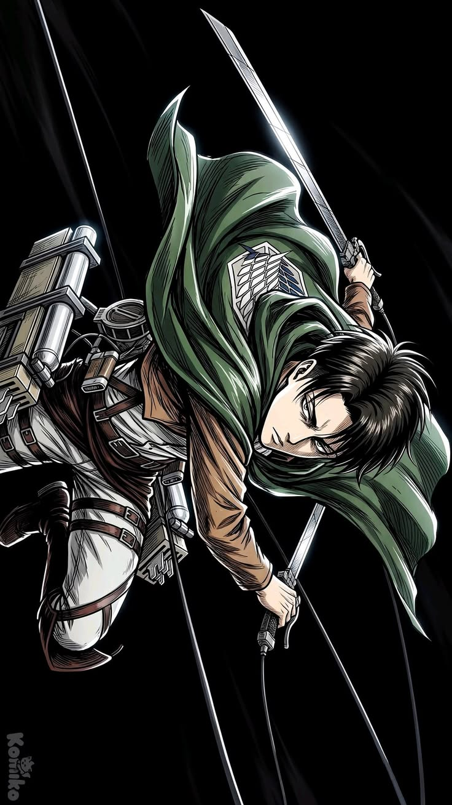

Levi Ackerman, de Attack on Titan, teve uma infância marcada pela pobreza, abandono e sofrimento. Após perder sua mãe, foi criado temporariamente por seu tio Kenny, que o ensinou a lutar e sobreviver. Ainda jovem, entrou para o mundo do crime, mas acabou se juntando à Tropa de Exploração ao lado de Erwin Smith. Durante sua trajetória, perdeu amigos e companheiros em diversas batalhas, tornando-se conhecido como o soldado mais forte da humanidade. Apesar de sua personalidade fria e reservada, Levi carrega o peso de todas as perdas que sofreu. Mesmo gravemente ferido no final da história, continua vivo, preservando a memória daqueles que sacrificaram suas vidas ao seu lado.